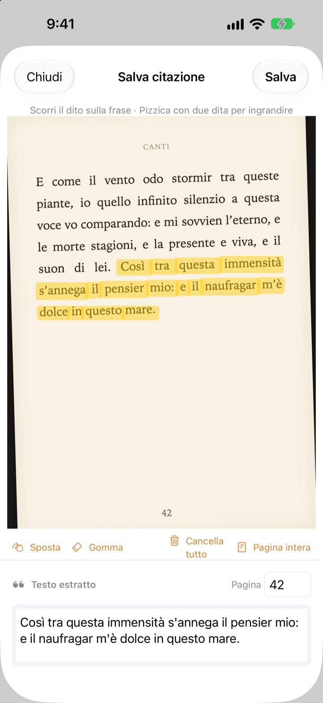
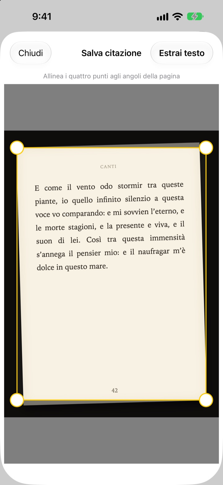
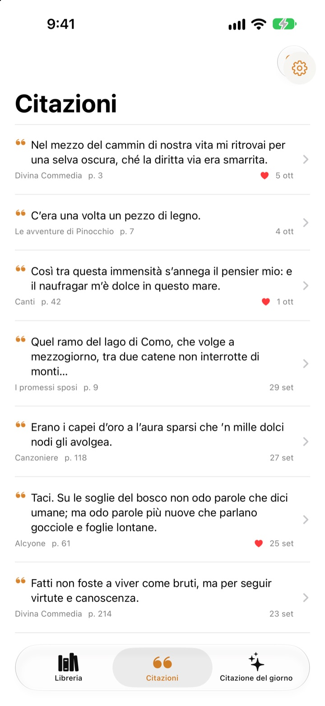
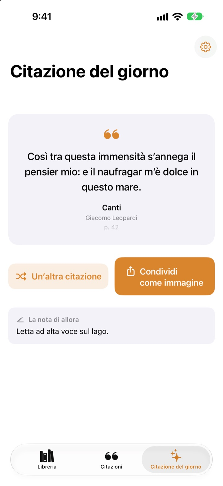

Sottolinea un libro
senza penna
Fotografa la pagina, passa il dito sulla frase che ti ha colpito e viene salvata come testo solo quella. Libro e numero di pagina arrivano insieme.
Tutte le funzioni sono gratuite, senza pubblicità.

Prova tu
Passa il dito o il mouse su una frase qualsiasi della pagina qui sotto. Sulla scheda finiscono solo le parole che attraversi.
Che fine fanno le frasi belle?
Il libro è della biblioteca, quindi non puoi sottolinearlo. La foto della pagina sparisce tra migliaia di altre nel rullino. Se la ricopi in un’app di note, titolo e numero di pagina si perdono quasi sempre. Bookmark Shot tiene insieme frase, libro e pagina con due gesti: scatti, poi passi il dito.
Foto storta, pagina dritta
Dopo lo scatto, allinea i quattro angoli e anche una pagina fotografata di sbieco viene distesa come un foglio. Lettere più nitide, riconoscimento migliore.
Funzionano anche le foto che hai già nella libreria di Foto.

Tutte le citazioni in un posto
I tuoi libri si ritrovano in una libreria di copertine e le citazioni in un unico elenco. Cerca per frase, nota o titolo del libro e metti un cuore a quelle da rileggere.
Aggiungi un libro con una sola foto della copertina. Titolo e autore vengono letti per te, e anche l’ISBN se si vede il codice a barre della quarta di copertina.

Ritrova le frasi dimenticate
La citazione del giorno ti riporta ogni giorno una delle citazioni salvate, insieme alla nota che avevi lasciato. Tienila nella schermata Home o nella schermata di blocco con un widget.
Ti piace? Trasformala in una cartolina dall’aspetto di carta e condividila.

Si comincia in tre passi
- 1
Fotografa la copertina
Titolo e autore vengono compilati. Puoi modificarli prima di salvare.
- 2
Fotografa la pagina
Allinea i quattro angoli e si raddrizza.
- 3
Evidenzia la frase
Il numero di pagina viene trovato e salvato insieme.
Gli strumenti della schermata di evidenziazione
- Passare il dito
- seleziona solo le parole che attraversi
- Pizzicare
- ingrandisce per evidenziare con più precisione
- Spostare
- trascina la pagina ingrandita
- Gomma
- toglie le parole evidenziate
- Cancella tutto
- rimuove tutte le parole selezionate
- Pagina intera
- tiene tutto il testo della pagina
- Campo pagina
- il numero di pagina trovato, modificabile
Con VoiceOver, tocca due volte una riga per aggiungerla o toglierla.
Tutte le funzioni sono gratis
Gratis
- Aggiunta dei libri dalla copertina, ISBN dal codice a barre
- Raddrizzamento delle pagine ed evidenziazione con il dito
- Numero di pagina automatico
- Libreria, ricerca tra le citazioni e preferite
- La citazione del giorno con widget per schermata Home e schermata di blocco
- Condivisione come cartolina
- Sincronizzazione iCloud
Sostieni lo sviluppatore
- Se ti va, lascia una piccola mancia dalle Impostazioni
- Le mance non sbloccano nulla. L’app resta la stessa
Niente pubblicità, niente abbonamenti.
Domande
Le mie foto o le mie citazioni vengono inviate da qualche parte?
No. Il riconoscimento del testo avviene interamente sul tuo dispositivo con Apple Vision, e foto e citazioni non vanno mai su un server. Funziona anche offline. Per i dettagli, consulta l’informativa sulla privacy qui sotto.
Quali lingue sa leggere?
Il riconoscimento del testo è affidato a iOS, direttamente sul dispositivo. Legge libri in coreano, inglese, giapponese, cinese, russo e nella maggior parte delle lingue dell’Europa occidentale e, con le versioni recenti di iOS, anche in thailandese, vietnamita, turco, indonesiano, polacco, ceco, olandese e nelle lingue nordiche. Il greco non viene ancora riconosciuto.
Come scelgo solo la frase che voglio?
Dopo aver fotografato la pagina, passa il dito sulla frase come con un evidenziatore: vengono selezionate solo quelle parole. Pizzica per ingrandire e avere più precisione. Ci sono anche la gomma, «Cancella tutto» e «Pagina intera».
Titolo o autore sono sbagliati.
Il riconoscimento della copertina si basa sulla grandezza dei caratteri, quindi può sbagliare con copertine molto elaborate. Puoi correggere titolo e autore prima di salvare il libro.
Il numero di pagina è sbagliato.
Viene letto dai numeri sul bordo della foto. Basta correggerlo nel campo pagina prima di salvare.
Posso vedere le mie citazioni su più dispositivi?
Sì. Se hai effettuato l’accesso a iCloud con lo stesso Apple Account e iCloud Drive è attivo, libri e citazioni si sincronizzano automaticamente.
Come aggiungo il widget?
Tieni premuto sulla schermata Home, tocca Modifica > Aggiungi widget e scegli Bookmark Shot. Per la schermata di blocco, tienila premuta e tocca Personalizza. Lì compare la citazione del giorno.
La fotocamera non funziona.
Controlla in Impostazioni > Bookmark Shot che l’accesso alla fotocamera e alle foto sia consentito. Per scattare foto serve un iPhone vero.
Cosa mi serve?
Un iPhone con iOS 17.0 o versioni successive.
Come posso contattarvi?
Invia un feedback dalla schermata Impostazioni (ingranaggio) dell’app o scrivici all’indirizzo qui sotto. Di solito rispondiamo entro due o tre giorni.
Domande o suggerimenti? Scrivi a leeo@kakao.com.